Vision
A future where every girl's ambition is matched by access and strengthened by sisterhood.
Peer mentoring, structured pathways, and sisterhood that opens real opportunities across education and early careers.
Currently operating across government school communities in Delhi.
Small peer circles and mentor continuity that support girls through school, college, and early career transitions.
Relationship-based guidance, practice spaces, and exposure that build confidence, networks, and decision-making ability.
Ninaad, Maitri Voices, and SakhiAI carry lived wisdom forward for juniors and the wider ecosystem.
A future where every girl's ambition is matched by access and strengthened by sisterhood.
Bridging aspiration and access for first-generation young women through structured sisterhood, mentorship, and opportunity pathways.
Updated monthly
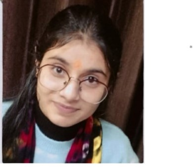
"I am Aditi and I came across Maitri community when my senior at school introduced me to it. Through the guidance and mentorship at Maitri, I became an EY Disha scholar. Today, I am a part of Content and Scholarship team at Maitri and guide my juniors to get the opportunity that I got through Maitri community."
"I am Soni and I work at AIIMS now as a pharmacist. I became a part of Maitri in 2022 and since then Maitri has stood with me for my scholarship. I am a Vidyadhan 2023 scholar, then pursued my Diploma in Pharmacy and now I am an earning member of my family. At all stages of my life, Maitri community has supported me with scholarship guidance, career counselling and then handholding me in my first job. I am grateful to the community."
SakhiAI by Maitri is featured in the casebook Real-World Impact of AI in Gender Empowerment, developed with UN Women and MeitY, and showcased at the India AI Impact Summit (New Delhi, February 2026).
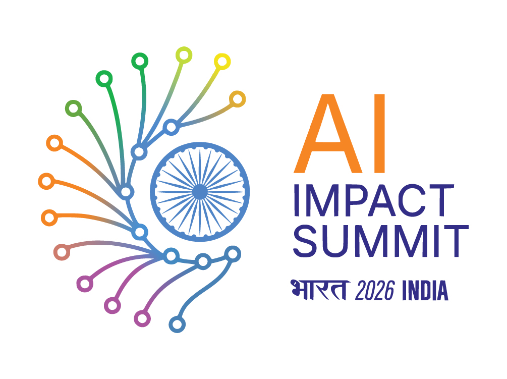
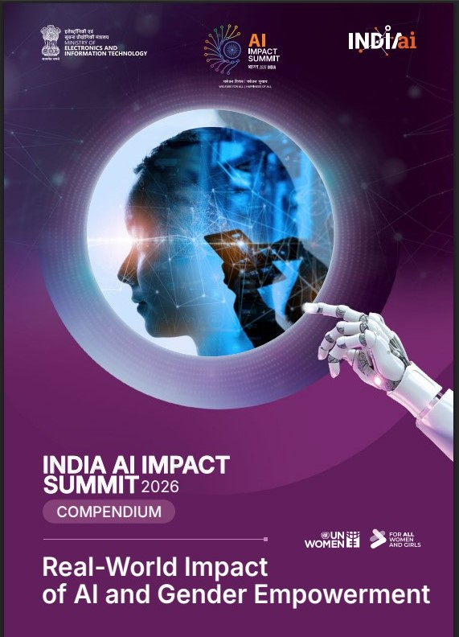
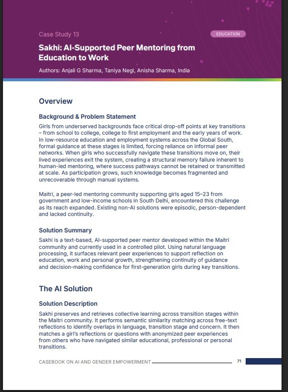
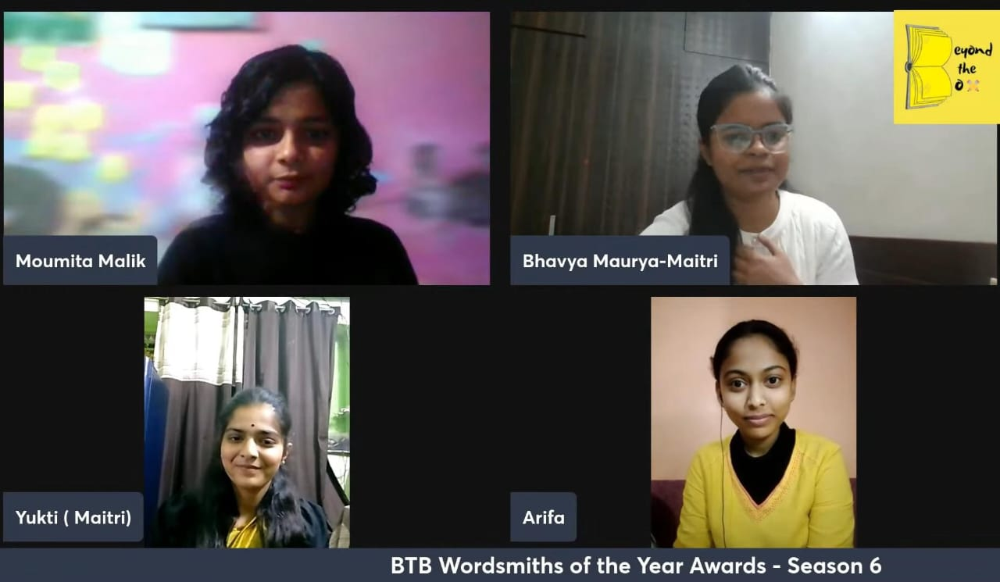
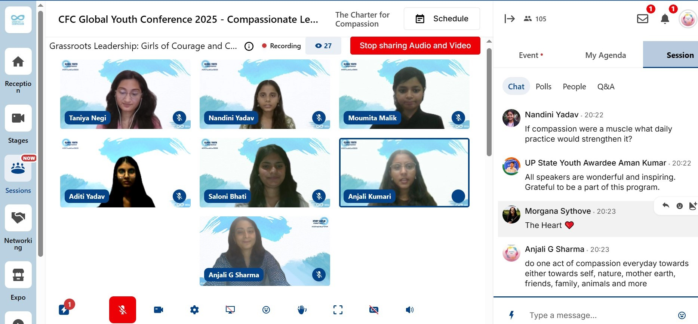
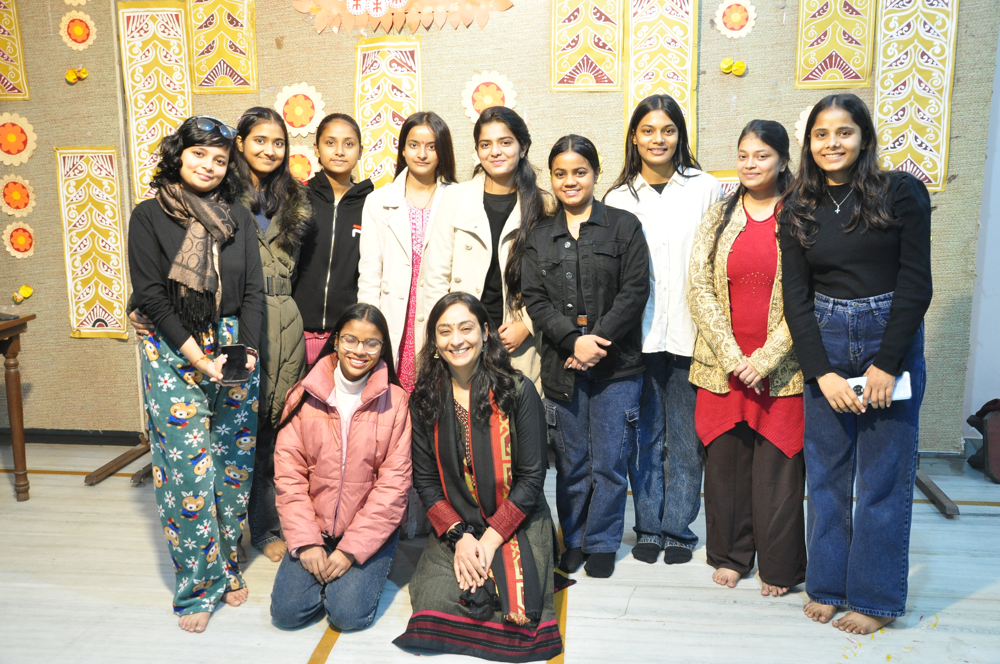
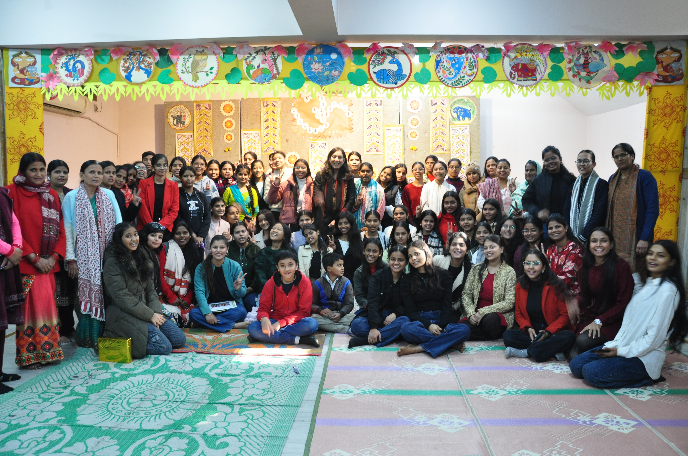
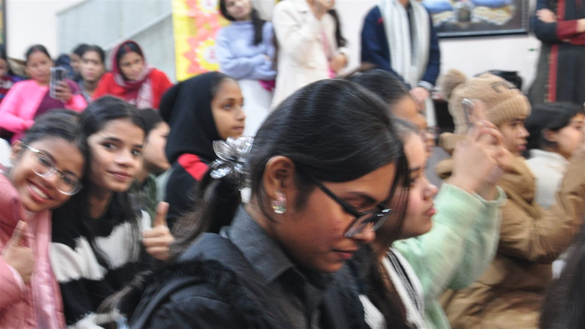
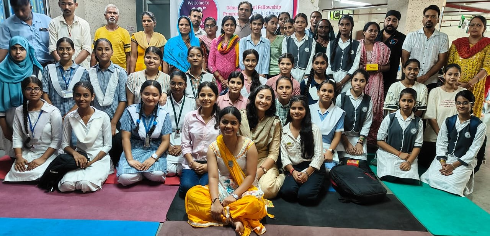
Maitri grows through the leaders it creates.
The conversations, milestones, and young leaders shaping our community.

The Maitri × Saijaya Calendar 2027
Twelve artists. Twelve original works. A calendar celebrating Indian culture through a contemporary, feminine lens, drawn from Canvas of Aspirations.
Bring their creativity into your everyday life and support the young artists behind it.

At a stall in Times Now's Noida office, Maitri's young entrepreneurs presented their handmade art and products, spoke with customers, and handled sales. An opportunity to put pricing, pitching, and business skills into practice.

Canvas of Aspirations 3.0 brought young artists' work to an online audience through Maitri, Saijaya, and Artisana. The exhibition has concluded; the artwork and stories remain a window into the community's creativity.

At the KARM Conclave, Maitri members explored financial literacy, women's experiences, and future pathways. Their reflections show how meeting new voices can broaden the possibilities they see for themselves.
October highlights from Maitri's Instagram updates. Each story links to its original post or exhibition profile.

Rajrani Sharma joins Bhavya Maurya to talk about family expectations, finding confidence, and pursuing a future in technology away from home.
Watch the conversation →
At PDSKV, Cadence Scholars Bhavya and Anushka shared their journeys with Class 12 students. Class XI scholars Ifra and Chahat encouraged Class 10 girls to prepare for opportunities ahead.
Read the outreach story (PDF) →Five Maitri members shared how compassion and community shaped their journeys, through an opportunity facilitated by Charter for Compassion.
Read the conference story (PDF) →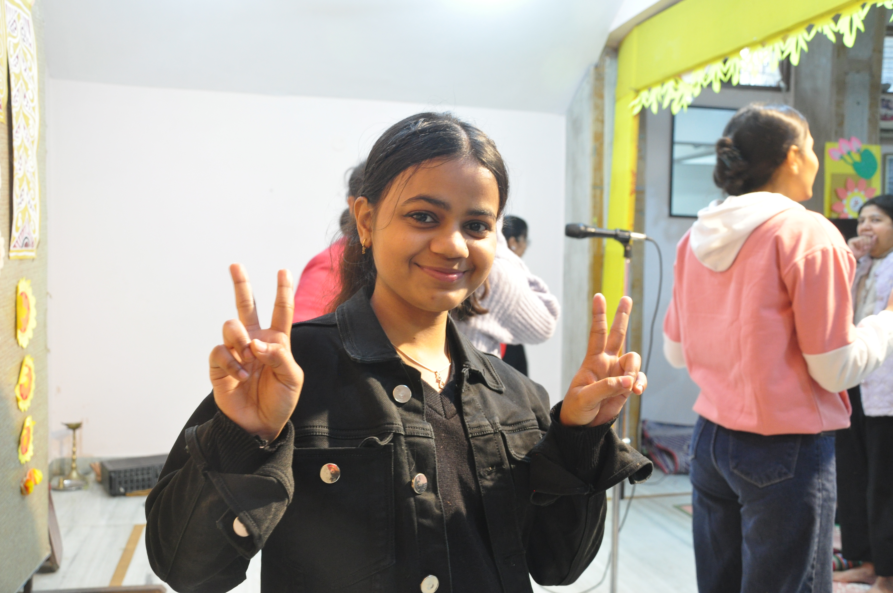
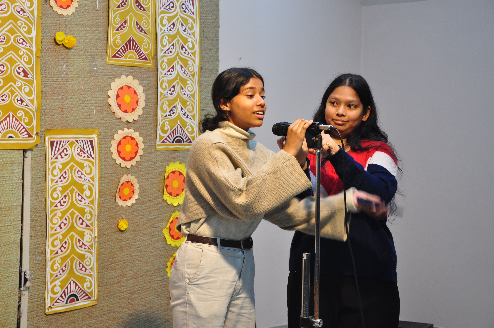
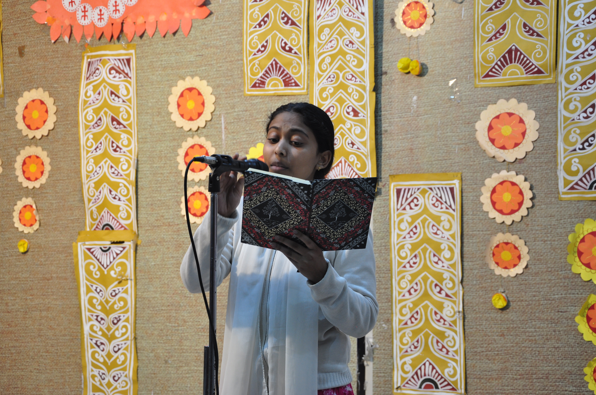
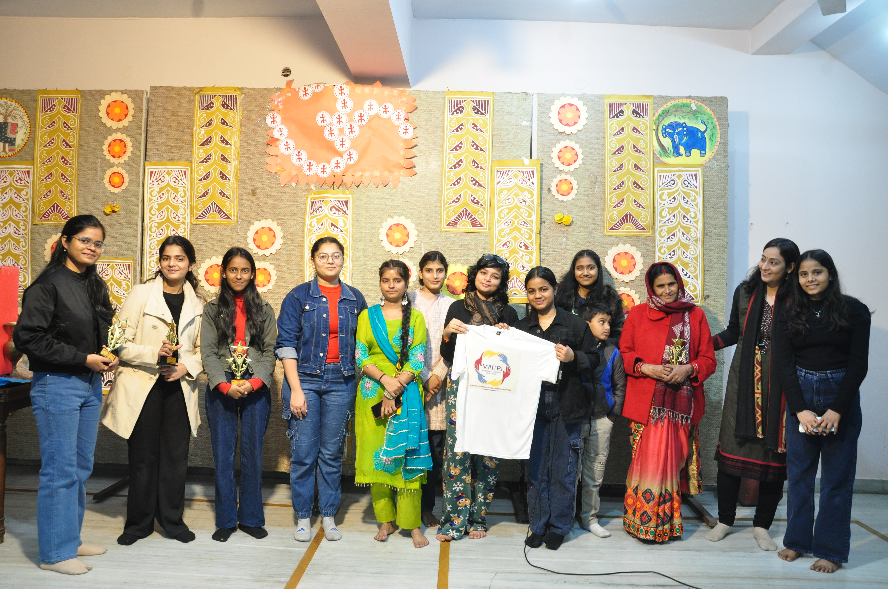